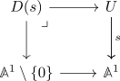

integral scheme and integral coordinate rings
Proposition
- $X$ is an integral scheme, in the sense that it is both reduced & irreducible
- for each nonempty, open subscheme $O$, the coordinate ring $\mathcal{O}_{X}(U)$ is an Integral domain
Proof
1) $\implies$ 2)
affine case
Assume $X = \mathrm{Spec}(A)$. Then this follows from reduced ring and reduced spec / irreducible spec and nilradical.
general case
choose an affine covering $\mathrm{Spec}(A_i)$, which consists of integral domains by the previous argument (cf. open subscheme of a reduced scheme is reduced & open subset of an irreducible space as irreducible space). Let $s,s' \in \mathcal{O}_{X}(U)$ such that $s \cdot s' = 0$. Then consider $D(s) \subseteq U$ which is the pullback

and similarly $D(s')$. Both are open subschemes of $U$ and we claim that they are disjoint: For $x \in \mathrm{Spec}(A_i) \subseteq \bigcup \mathrm{Spec}(A_i) = U$, we have $s_x \cdot s_{x'} = 0$ in the integral domain (cf. stalk of an integral scheme is integral) $\mathcal{O}_{X,x}$. hence w.l.o.g. $s_{x}' = 0$ or equivalently $x \not\in D(s')$. This shows disjointness but irreducibility shows w.l.o.g. $D(s') = \emptyset$ or $s' = 0$.
2) $\implies$ 1)
reduced follows from reduced scheme, reduced coordinate ring and reduced stalks. Now let $U_1,U_2 \subseteq X$ be arbitrary and assume $U_1 \cap U_2 = \emptyset$. Then $\mathcal{O}_{X}(U_1 \cup U_2) = \prod \mathcal{O}_{X}(U_i)$ by the sheaf condition. This implies w.l.o.g. that $\mathcal{O}_{X}(U_1)$ is the zero ring, otherwise the RHS would not be an integral domain. This implies $U_1 = \emptyset$ or that $X$ is irreducible.